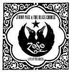

 |
Джимми Пейдж и группа "Блэк Кроуз", которую умные люди квалифицируют как "рокеры-неотрадиционалисты", совершили первый совместный тур в прошлом году. В результате появился альбом "Концерт у ручья", который распространялся исключительно по интернету. В этом году виртуальный альбом материально публикует некая независимая (т.е. independent) фирма. Джимми Пейдж на индепенденте - это сюрприз! В неблюзовом альбоме довольно большое количество блюзовых номеров. Что неудивительно, поскольку и "...Зеппелин" и "...Кроуз" всегда тяготели к тяжелому блюзу. Два трека, представляющих чикагскую и лондонскую блюзовую классику, из совместного альбома можно скачать у нас. Кстати, в настоящий момент Пейдж и "...Кроуз" снова гастролируют вместе. |
W.Dixon "Mellow Down Easy" в WMA
P.Green "Oh Well" в MP3
файлы будут находиться здесь для ознакомления непродолжительное время.
Лидер блюзовой двадцатки "B.B. King and Eric Clapton "Riding With the King" на этой неделе занял 10-ю позицию в общем списке популярных альбомов "Top 200", спустившись с #3, на котором дебютировал.
Временно мы предоставляем возможность послушать из этого альбома песню "10 Long Years" в MP3